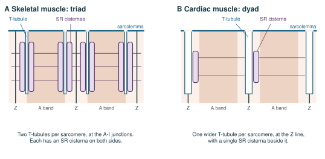
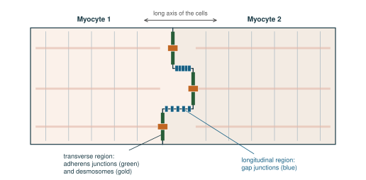
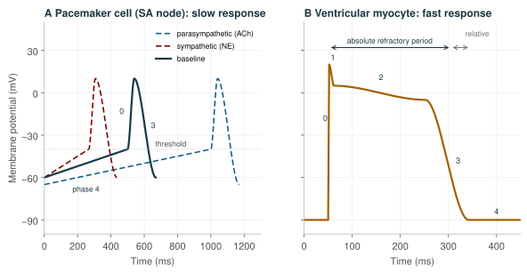
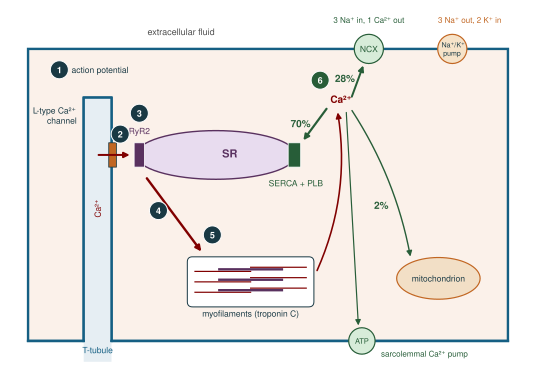
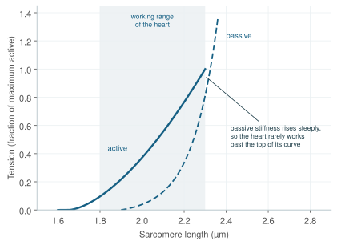
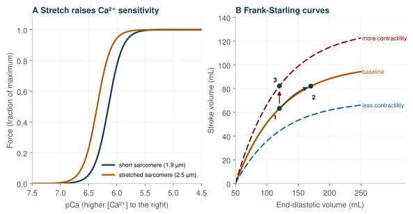

7 Cardiac Muscle
How the myocyte’s structure and Ca2+ handling make the heart a pump
- Describe the structure of cardiac muscle, from the layers of the heart wall to the myocyte, and how it differs from skeletal muscle: branched cells, intercalated discs, dyads, many mitochondria.
- Explain what each part of the intercalated disc does: gap junctions, adherens junctions and desmosomes.
- Outline the conduction system, and contrast the action potential of a pacemaker cell with that of a ventricular myocyte.
- List the steps of cardiac excitation-contraction coupling, from the L-type Ca2+ channel through Ca2+-induced Ca2+ release to relaxation, and say where the Ca2+ goes.
- Explain how SERCA and phospholamban set the size of the next beat, and how epinephrine and norepinephrine use them to raise contractility.
- Explain the length-tension relationship of cardiac muscle and the Frank-Starling mechanism, and keep stretch separate from contractility.
Names, dates and the exact values in figure captions are context, not things to memorize.
Cardiac output is the blood the heart pumps each minute. Along with heart rate, three things set it, and the three muscle types map onto them. The volume that fills the ventricle before it contracts (venous return, which sets end-diastolic volume) depends partly on skeletal muscle, whose pump squeezes blood back toward the heart. Vascular tone, which sets systemic vascular resistance (SVR), is the work of smooth muscle. And the strength of each beat depends on cardiac muscle. This chapter is about that third piece: how a cardiac myocyte is built, how an action potential becomes a contraction, and what lets the force of that contraction change from beat to beat.
The workload is large. At 70 beats per minute, the heart beats about 100,800 times a day, almost 37 million times a year, and about 2.8 billion times in a 75-year life. At a cardiac output of 5 L/min it pumps 7,200 L a day, close to 200 million liters in a lifetime: roughly 80 Olympic swimming pools. Most of the myocytes that do that work are the ones you were born with, because adult cardiac myocytes essentially do not divide.
This chapter builds on the sarcomere, the cross-bridge cycle and troponin regulation in Skeletal Muscle, and on the membrane potential in Membrane Potentials and Excitable Cells.
The introduction slide lists the heart’s contribution to cardiac output as “Contractility (Rate, inotropy, lusitropy).” In this course contractility means inotropy only: the intrinsic ability of the heart muscle to develop force at a given preload and afterload. It does not depend on loading. On the pressure-volume loop, greater contractility makes the end-systolic pressure-volume relationship steeper. Heart rate (chronotropy) and the speed of relaxation (lusitropy) are separate properties. All three affect cardiac output, but rate and relaxation are not part of contractility. This is errata entry 2.
7.1 Structure
7.1.1 The heart wall
The heart wall has three layers. The outermost is the epicardium, which is the visceral layer of the pericardium. Outside it is the pericardial space, then the parietal pericardium and the tough fibrous pericardium, which anchors the heart in the chest. The middle layer, the myocardium, is the cardiac muscle. The inner layer, the endocardium, is connective tissue lined with endothelium, which separates the myocardium from the blood in the chambers.
In the ventricles the muscle fibers do not run in one direction. They wind around the chambers in spiraling layers from base to apex, and their angle changes through the thickness of the wall. When they shorten, the ventricle does not just squeeze in from the sides. It wrings, like a towel being twisted, and pushes blood out toward the valves at the base.
7.1.2 The cardiac myocyte
Cardiac myocytes are:
- striated, with sarcomeres just like skeletal muscle;
- branched, so each cell connects to several neighbors;
- joined end to end by intercalated discs;
- packed with mitochondria, which take up about 30% of the cell’s volume. The heart never rests, so it depends on a steady supply of ATP from oxidative metabolism;
- usually mononucleated, with a single central nucleus (some cells have two).
Each cell is about 100 µm long, much shorter than a skeletal muscle fiber, which is one multinucleated cell that can run the length of the muscle.
7.1.3 Sarcolemma and T-tubules
The sarcolemma, the myocyte’s cell membrane, carries the transporters and channels that set the membrane potential. At each Z line it dips deep into the cell as a T-tubule (transverse tubule). The inside of a T-tubule is extracellular space: it is open to the fluid outside the cell, and its lining of negatively charged polysaccharides binds Ca2+, so the T-tubules hold a supply of extracellular Ca2+ right next to the channels that let it in. Because the T-tubules carry the membrane deep into the cell, an action potential on the surface reaches every myofibril almost at once.
Each T-tubule runs right next to the sarcoplasmic reticulum (SR). In cardiac muscle a T-tubule pairs with one SR cisterna, a dyad (Figure 7.1). Skeletal muscle has triads: one T-tubule flanked by two SR cisternae. Cardiac T-tubules are also wider, there is one per sarcomere instead of two, and the SR is less extensive than in skeletal muscle. The slides write “diads”; the course term is dyad.

7.1.4 The sarcoplasmic reticulum
The SR is the cell’s main store of Ca2+ for contraction. Three proteins in its membrane matter here:
- the ryanodine receptor (RyR2 in the heart), a Ca2+ release channel. It senses Ca2+ in the cytosol, and when Ca2+ rises near it, it opens and releases SR Ca2+;
- SERCA (sarco/endoplasmic reticulum Ca2+-ATPase), a pump that uses ATP to move Ca2+ from the cytosol back into the SR;
- phospholamban (PLB), a small protein that regulates SERCA. Unphosphorylated, it holds SERCA back. When it is phosphorylated, the brake comes off and SERCA pumps faster.
Epinephrine and norepinephrine, acting through β1 receptors, raise cAMP and activate protein kinase A (PKA), which phosphorylates phospholamban. SERCA speeds up and Ca2+ uptake into the SR increases. You need only the result, not the steps of the cascade. The section on unique properties shows why that makes the heart beat more strongly.
The SR slide and the peer-educator notes say that phospholamban “is unique to cardiac muscle.” Phospholamban is the main regulator of SERCA in the heart, but it is also found in slow-twitch (type I) skeletal muscle and in smooth muscle. What matters for this course is that β1-adrenergic phosphorylation of phospholamban speeds Ca2+ uptake in the heart. This is errata entry 3.
The notes also say the SR “holds a large store of Ca2+ used for depolarization.” SR Ca2+ is used for contraction, not depolarization. The myocyte depolarizes because Na+ enters, and its plateau comes from Ca2+ entering across the sarcolemma through L-type channels. Releasing SR Ca2+ is the step that links the action potential to contraction. This is errata entry 19.
7.1.5 The sarcomere and troponin
The cardiac sarcomere has the same parts as the skeletal sarcomere: Z lines anchoring the thin (actin) filaments, an M line in the middle anchoring the thick (myosin) filaments, the light I band (thin filaments only), the dark A band (the full length of the thick filaments), and the H zone in the middle of the A band (thick filaments only), which narrows as the muscle shortens. The slides label it the H band. The details are in Skeletal Muscle.
Regulation is on the thin filament, as in skeletal muscle. Tropomyosin lies along the actin and covers the myosin-binding sites. The troponin complex sits on tropomyosin: troponin C binds Ca2+, troponin I inhibits actin-myosin binding, and troponin T anchors the complex to tropomyosin. When Ca2+ binds troponin C, the complex changes shape, tropomyosin moves, the binding sites are exposed, and cross-bridges form.
Cardiac troponin C has one regulatory Ca2+-binding site, and skeletal troponin C has two. Both also have two structural sites that bind Ca2+ or Mg2+, so in all cardiac troponin C has three sites and skeletal has four. The single regulatory site is the one that switches contraction on.
The sarcomere slide and the peer-educator notes say “Troponin C only has 1 calcium binding site (Skeletal muscle has 4).” That compares cardiac regulatory sites (one) with skeletal total sites (four). Compared like with like, cardiac troponin C has one regulatory site and skeletal has two, and cardiac has three sites in all and skeletal four. This is errata entry 4.
A clinical correlation. Cardiac troponin I and troponin T are cardiac-specific isoforms, different enough from the skeletal forms that blood tests can tell them apart. When cardiac myocytes are injured, as in a myocardial infarction, troponin leaks out of the dying cells and its level in the blood rises. That is why a troponin level is drawn in a patient with chest pain.
7.1.6 Intercalated discs
Where two myocytes meet end to end, their membranes form an intercalated disc. It runs in steps (Figure 7.2). The transverse parts of each step run across the long axis of the cells, and the myofibrils end there. The longitudinal parts run along the long axis. Each part holds different junctions.

Gap junctions (longitudinal regions): communication. Each gap junction channel is made of 12 connexin proteins, six from each cell. Each set of six forms a half-channel, and the two halves line up across the narrow gap between the cells to make a channel connecting the two cytoplasms. Ions and small molecules flow freely through it. That is why the gap junction matters: when one myocyte depolarizes, current flows through the gap junctions into its neighbors and depolarizes them. The action potential spreads from cell to cell without any nerve, and the whole myocardium contracts as a coordinated unit, a functional syncytium.
Adherens junctions (transverse regions): the zipper. Cadherins span the gap between the cells. Inside each cell, α-catenin and β-catenin link the cadherins to the actin of the cytoskeleton, and the myofibrils attach here. Force generated in one cell’s sarcomeres is passed straight to the next cell.
Desmosomes (transverse regions): the rivet. The transmembrane proteins desmoglein and desmocollin bind across the gap. Inside the cell, desmoplakin connects them to desmin, an intermediate filament. Desmosomes hold the cells firmly together so they do not pull apart when the heart contracts.
7.2 Conduction system and autorhythmicity
The heart starts its own beat. Specialized cardiac cells generate the impulse and carry it through the heart in order:
- Sinoatrial (SA) node, in the right atrium, the heart’s pacemaker. It fires fastest, so it sets the rate.
- Internodal pathways through the atria, and Bachmann’s bundle, which carries the impulse to the left atrium.
- Atrioventricular (AV) node, which delays the impulse so the atria finish contracting before the ventricles start.
- Bundle of His.
- Left and right bundle branches and the Purkinje fibers, which spread the impulse quickly through the ventricular walls.
These conductive cells are specialized myocytes, not nerves. They contain little actin and myosin, so they contract weakly or not at all. They are also anatomically isolated from the surrounding working myocytes: the Purkinje fibers, for example, run in bundles wrapped in connective tissue, and they connect to ordinary myocytes only at their ends.
Pacemaker cells and ordinary ventricular myocytes have different action potentials (Figure 7.3). A ventricular myocyte sits at a stable resting potential of about −90 mV until a neighbor depolarizes it. Its fast-response action potential rises sharply (phase 0), dips briefly (phase 1), holds a long plateau near 0 mV (phase 2), repolarizes (phase 3) and returns to rest (phase 4). A pacemaker cell has no stable resting potential. Its slow-response action potential starts from a maximum diastolic potential of about −60 mV and drifts upward in phase 4 until it reaches threshold, then rises slowly (phase 0) and repolarizes (phase 3).
Autonomic nerves change heart rate by changing that phase 4 drift. Sympathetic stimulation (norepinephrine at β1 receptors) steepens it, so threshold comes sooner and the rate rises. Parasympathetic stimulation (acetylcholine at M2 receptors) does two things at once: it opens K+ channels, so each cycle starts from a more negative potential, and it lowers cAMP, so the slope flattens. Both lengthen the time to threshold and slow the heart. The lecture’s figure shows only the flatter slope; both effects happen together, as Autonomic and Extrinsic Control explains.

The ionic currents behind each phase are the subject of EKG I: Ionic Basis.
The upstroke of a slow-response action potential, in the SA and AV nodes, is carried by Ca2+ through L-type channels, not by Na+. That is why L-type Ca2+ channel blockers slow conduction through the AV node. What this means for other drugs is in Membrane Potentials and Excitable Cells and EKG I: Ionic Basis.
The absolute (effective) refractory period of a ventricular myocyte lasts through the plateau and about midway through phase 3, almost as long as the contraction itself. The relative refractory period covers the rest of phase 3. The cell cannot fire again until it has largely relaxed, so the heart cannot be tetanized the way skeletal muscle can.
7.3 Excitation-contraction coupling
Excitation-contraction coupling is the chain of steps that turns the action potential into contraction. In cardiac muscle it runs in six steps (Figure 7.4).
- The action potential arrives. It starts in the SA node, travels through the conduction system to the myocytes, and spreads from cell to cell through gap junctions. In each cell it runs down the T-tubules, deep into the cell, close to the SR.
- L-type Ca2+ channels open. Depolarization of the T-tubule membrane opens voltage-gated L-type Ca2+ channels, and Ca2+ flows into the cell from the extracellular fluid in the T-tubule. This entry is the plateau current.
- Ca2+ activates the ryanodine receptor. The incoming Ca2+ diffuses across the narrow gap of the dyad and binds RyR2 on the SR.
- The SR releases a large amount of Ca2+. RyR2 opens and releases far more Ca2+ from the SR into the cytosol than came in through the L-type channels. A small trigger releases a large store: Ca2+-induced Ca2+ release.
- Ca2+ binds troponin C. The troponin complex changes shape, tropomyosin moves off the myosin-binding sites on actin, and cross-bridges cycle. The sarcomeres shorten. The cross-bridge cycle is the one in Skeletal Muscle.
- Ca2+ is removed and the myocyte relaxes. About 70% of the Ca2+ is pumped back into the SR by SERCA, under the control of phospholamban. NCX, the Na+/Ca2+ exchanger, removes most of the rest (about 28%) from the cell, bringing three Na+ in for each Ca2+ it moves out. The last 2% or so leaves through the sarcolemmal Ca2+-ATPase and the mitochondria (the slide shows it going to the mitochondria). As Ca2+ leaves troponin C, tropomyosin covers the binding sites again.

Two consequences follow from these numbers. First, most of the Ca2+ that activates the myofilaments comes from the SR, not from outside the cell. Extracellular Ca2+ is still essential: without the trigger there is no release, and a cardiac myocyte will not contract in Ca2+-free solution. Second, in a steady state, whatever Ca2+ enters through the L-type channels each beat has to leave the cell again, mostly through NCX. What SERCA takes back into the SR is available for the next beat.
How this differs from skeletal muscle. In skeletal muscle, the voltage sensor in the T-tubule (the dihydropyridine, or DHP, receptor) is mechanically linked to the ryanodine receptor (RyR1) and opens it directly by changing shape. No Ca2+ has to enter from outside, and skeletal muscle keeps contracting in Ca2+-free solution. In cardiac muscle the L-type Ca2+ channel is the same family of protein, but it is not physically coupled to RyR2. It works by letting Ca2+ in, and that Ca2+ opens RyR2.
7.4 Unique properties
7.4.1 Force depends on sarcomere length
As in skeletal muscle, the force a cardiac myocyte develops depends on how long its sarcomeres are when it starts to contract. In skeletal muscle, force is greatest at the length where thin and thick filaments overlap best (about 2.0 to 2.2 µm) and falls off as the sarcomere is shortened or stretched away from that length. Cardiac muscle works over a much narrower window (Figure 7.5). Its active force rises steeply as the sarcomere is stretched from about 1.8 to about 2.3 µm, and its passive tension (the force needed to stretch the resting muscle) rises steeply above about 2.2 µm. The heart normally works on the rising limb of its length-tension curve.

The length-tension slide and the peer-educator notes say that cardiac sarcomeres are shorter than skeletal sarcomeres, which “makes for narrower window of optimal contraction.” The thick filaments are the same length in both, and the sarcomere lengths overlap. The window is narrow mainly because resting cardiac muscle is so stiff: its giant elastic protein (titin) and its extracellular matrix resist stretch, so passive tension climbs steeply above about 2.2 µm and keeps the sarcomeres near the top of their working range even when the heart is very full. The rising limb is also steeper in heart muscle, because at the Ca2+ level of a normal beat a shorter sarcomere is less sensitive to Ca2+ (see the Frank-Starling mechanism below). The practical point is the same either way: the heart works over a narrow range of sarcomere lengths, on the rising part of its curve.
The slide’s cardiac curve also peaks near 2.4 µm and then falls steeply. In the intact heart, passive stiffness keeps sarcomeres from going much past 2.2 to 2.3 µm, so that falling limb is rarely reached, and the figure here draws only the range the heart uses. What matters is the shape: the heart works on the rising limb, over a narrow range, while skeletal muscle works over a broader range around its 2.0 to 2.2 µm peak.
7.4.2 The Frank-Starling mechanism
The more the ventricle fills in diastole, the more its sarcomeres are stretched, and the more forcefully it contracts. Stroke volume rises with end-diastolic volume. This is the Frank-Starling mechanism, and it lets the heart pump out whatever returns to it, beat by beat, without any nerve or hormone.
Stretch raises force in two ways. Lengthening the sarcomere toward about 2.2 µm improves the overlap of thin and thick filaments. Stretch also makes the myofilaments more sensitive to Ca2+: at a longer sarcomere length, the same Ca2+ concentration produces more force (Figure 7.6 A). In the heart the second effect is thought to be the larger one.

Keep the two kinds of change apart (Figure 7.6 B). More filling moves the heart along its Frank-Starling curve: force and stroke volume rise, and contractility does not change. A change in contractility moves the heart to a different curve: more (or less) force at the same end-diastolic volume. At very high filling volumes the curve flattens, so more filling adds little stroke volume. The Cardiac Pump chapter shows the same distinction on the pressure-volume loop, where more filling moves the beat along the same end-systolic pressure-volume line and greater contractility makes the line steeper.
The Frank-Starling slides say “Starling Curve maps contractility with stretch” and “Increased filling and stretch can lead to decreased contractility.” Stretch raises the force of contraction and the stroke volume, not contractility: more filling moves the heart along the same Frank-Starling curve. At very high filling the curve flattens, so more filling adds little stroke volume. That flattening is not a fall in contractility. Contractility changes only when the state of the muscle changes, and then the heart moves to a higher or lower curve.
“Stretching the ventricle increases its contractility” is wrong. Stretch increases the force of contraction through the Frank-Starling mechanism, and contractility is unchanged: the heart stays on the same curve.
7.4.3 Force depends on Ca2+
A cardiac myocyte will not contract without Ca2+, and the force it develops depends on how much Ca2+ reaches the myofilaments. In skeletal muscle a single twitch is brief and submaximal, and the body grades force by recruiting more motor units and by firing them faster, so that Ca2+ stays high (summation and tetanus). In the heart every cell contracts on every beat, and none can be tetanized, so the heart grades force partly by length (Frank-Starling) and partly by how much Ca2+ each beat releases. At normal levels the Ca2+ released in a beat fills only part of the troponin C sites, which leaves room for more.
This is where phospholamban comes back. Epinephrine and norepinephrine, through β1 receptors and PKA, phosphorylate phospholamban. SERCA pumps faster, the SR takes up more Ca2+ and holds a larger store, and the next action potential releases more Ca2+. More Ca2+ on troponin C means a stronger contraction: contractility rises. Faster Ca2+ uptake also makes the myocyte relax faster, which helps the ventricle fill when heart rate is high. Phosphorylation of phospholamban is one way adrenergic signaling increases cardiac contractility.
The lecture’s diagram of the β-adrenergic cascade shows that PKA also phosphorylates the L-type Ca2+ channel (more Ca2+ enters each beat), the ryanodine receptor, and troponin I (Ca2+ comes off troponin C faster, so relaxation speeds up). Acetylcholine at M2 receptors, through Gi, lowers cAMP and opposes these effects. The lecture says you do not need to memorize this part of the cascade.
7.5 Summary
| Feature | Skeletal muscle | Cardiac muscle | Smooth muscle |
|---|---|---|---|
| Control | Voluntary (somatic motor neurons) | Involuntary (intrinsic pacemaker, modulated by the autonomic nervous system) | Involuntary (autonomic, hormonal, stretch, NO) |
| Cells | Long, multinucleated fibers | Short, branched, usually one nucleus, joined by intercalated discs | Small, fusiform, one nucleus |
| Striations | Yes (sarcomeres) | Yes (sarcomeres) | No (dense bodies) |
| Membrane system | T-tubules and triads | Wider T-tubules and dyads | Caveolae, sparse SR |
| How the SR is triggered | DHP receptor mechanically coupled to RyR1 | Ca2+ entry through L-type channels opens RyR2 (Ca2+-induced Ca2+ release) | Ca2+ entry and IP3 |
| Needs extracellular Ca2+ to contract | No | Yes | Yes, for sustained contraction |
| Ca2+ sensor | Troponin C | Troponin C | Calmodulin, which activates MLCK |
| Electrical coupling | None between fibers; each fiber has its own neuromuscular junction | Gap junctions in intercalated discs | Gap junctions in single-unit muscle |
| Can be tetanized | Yes | No (long refractory period) | Sustained contraction and latch |
| Range of working lengths | Broad, optimum about 2.0 to 2.2 µm | Narrow, on the rising limb | Wide; the optimum moves with adaptation |
| Can divide | No | No | Yes |
Stretch and Ca2+ handling return in The Cardiac Pump and Control of Cardiac Output: stretch is how the heart responds to filling, and Ca2+ handling is the main thing contractility changes.
7.6 Check your understanding
A drug blocks SERCA in a ventricular myocyte. Predict what happens to relaxation, and to the force of the beats that follow.
Answer
Relaxation slows, because the main route for clearing Ca2+ from the cytosol (about 70%) is gone and NCX has to do most of the work. Beat by beat the SR store runs down, because Ca2+ released from the SR is no longer pumped back. Less Ca2+ is released with each action potential, so less binds troponin C and force falls.
A drug blocks the gap junctions between ventricular myocytes. What happens to the spread of excitation, and why does it matter for pumping?
Answer
The action potential can no longer pass from cell to cell through the gap junctions, so excitation spreads slowly or not at all. The myocytes stop contracting together as a functional syncytium, and the ventricle cannot squeeze its blood out in one coordinated contraction.
During exercise the heart rate rises and the time between beats shrinks. How does β1 stimulation make each beat relax faster? Name the proteins PKA acts on and the pump involved, and say why faster relaxation matters at a high heart rate.
Answer
β1 receptors raise cAMP and activate PKA. PKA phosphorylates phospholamban, which takes its brake off SERCA, so SERCA pumps Ca2+ back into the SR faster. PKA also phosphorylates troponin I, so Ca2+ comes off troponin C sooner. Cytosolic Ca2+ falls faster, cross-bridges detach sooner, and the myocyte relaxes earlier in each cycle. The speed of relaxation is lusitropy, a property separate from contractility. At a high heart rate the ventricle has little time between beats to fill, and relaxing early leaves more of that time for filling.
On the Frank-Starling curves in Figure 7.6 B, a heart can reach the same larger stroke volume by moving from point 1 to point 2 or from point 1 to point 3. What is different about the sarcomeres in the two cases, and which one involves a change in contractility?
Answer
From 1 to 2, the heart fills more, so its sarcomeres start each beat longer. That raises force through better filament overlap and greater Ca2+ sensitivity, with no change in contractility: the heart stays on the same curve. From 1 to 3, sarcomere length at the start of the beat is the same, but more Ca2+ is released and bound each beat (for example after β1 stimulation phosphorylates phospholamban). The heart develops more force at the same length, which is what a rise in contractility means, so it moves to a higher curve.
Of the Ca2+ that activates contraction in each beat, most is removed by SERCA and about 28% by NCX. Why must the NCX fraction roughly match the Ca2+ that entered through the L-type channels?
Answer
In a steady state the cell cannot gain or lose Ca2+ from beat to beat. Ca2+ that came in from outside through the L-type channels has to go back out, and NCX is the main route out. Ca2+ taken back up by SERCA stays inside, in the SR, ready for the next beat.
A ventricular myocyte’s action potential lasts 250 ms and its twitch 300 ms. A second stimulus arrives either 100 ms or 320 ms after the first upstroke. Which timing fires a second action potential, and does the force of the second beat add to the first?
Answer
At 100 ms the cell is in its plateau, inside the absolute refractory period, so the stimulus fires nothing and the first twitch runs its course unchanged. At 320 ms the action potential is over and the twitch has ended, so the stimulus fires a new action potential and a new twitch. That twitch starts from a relaxed muscle, and its force does not add to the first. The cell can fire again only once it has largely relaxed, so cardiac twitches do not summate.
7.7 Sources
This chapter follows the 2026 Cardiac Muscle lecture for MEDC 30504 and draws on the peer-educator notes and the 2018 course notes, corrected and updated. All figures were drawn for this book.